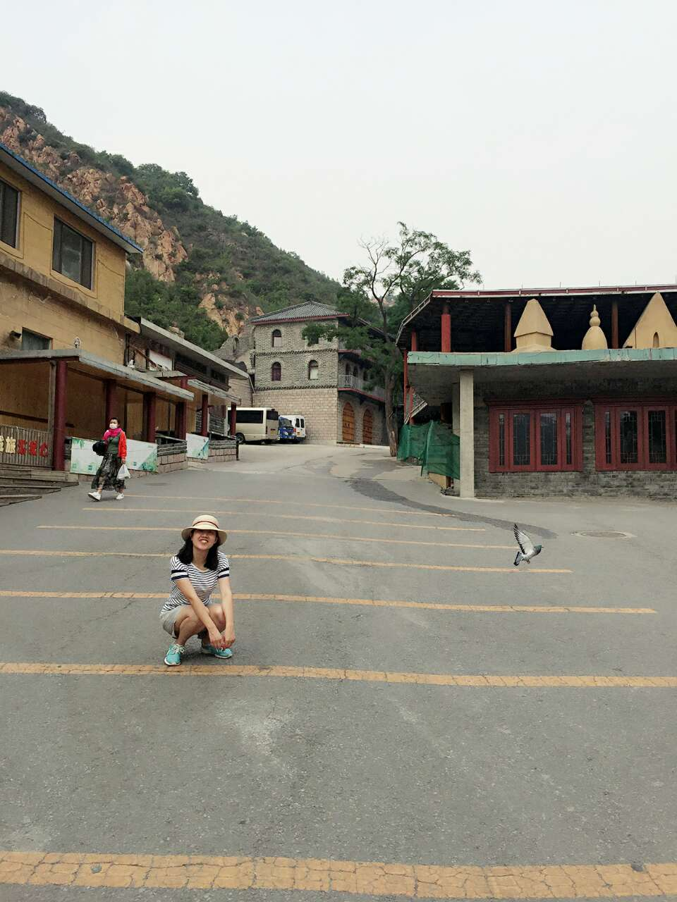

很多人都说女人到了25岁，身体发展达到最旺盛的状态,此后身体便开始慢慢衰老。
然而我发现我比较“叛逆”，25岁之后，越来越不安于现状，想要彻底地与过去告别。
我今年27岁。看着身边的朋友越来越漂亮，觉得自己越来越吃藕~之前喜欢我的一个男生说我变丑了，连骨骼都改变了，我很受打击，于是下定决心把困扰了我27年的兔牙给矫正了。ps：小时候很多人说我的牙齿可爱，可是长大了，越发觉得不整齐的牙齿太影响美观了。
————————————————我是一条分割线————————————————
2016.12.18 先去询问了一家公立医院（我的四颗智齿就是在那里拔的，技术很好），报价2w+，医生说你想好了就可以建档了。我不甘心，又去了朋友推荐的私立口腔诊所咨询了一番，报价1.5w。对比了一下，还是选择了公立医院，毕竟一分价钱一分货，可能牙齿正畸贵就贵在医生的技术上了吧。于是就又跑到公立医院建档了，我说能不能不拔牙，医生说等片子出来了，再定设计方案。最后美女护士说这个档案会跟着你2.5年，并交代了下周四8点半抽血。
2016.12.22 抽血化验 护士说等结果出来了，再通知我能不能整牙，其实就是检查有没有传染病。好吧，大医院程序就是繁琐，我等。
2017.1.12 拍片、拍照、建模 先去放射科拍了x光，然后去照相室建模，拍照。护士拿了一个类似于牙槽的工具，填满类似于藻泥的东西之后，让我咬下去，刚咬下去就有点恶心，不过好在上下咬了两次之后，就结束了。没想到光拍照就拍了30多分钟，先是正面和侧面半身照，然后就是用工具把嘴唇向四个角用力拉扯，把牙齿全部露出来拍照，更痛苦的是嘴里含了一个和嘴宽度一样的镜子，口水直流啊，又是全方位的拍照。不过拍照的美女护士人特别好，也很精益求精，所以整体下来感受不错。最后去找美女护士，以为就能谈设计方案了，没想到告诉我说得年后了，等通知。哎，那就再等等，过年我就大口吃肉，整牙齿之后可能没法吃肉了。
2017.2.10 医生回家过年还没上班，约到26号了，等谈过方案之后再来更新。看了知乎这么多人的回答，我什么也不怕了，拔四颗牙也是能接受了。
——————————————————我是第二条分割线——————————————
2017.2.26 一大早开心地去见主任医生，谈了谈设计方案，医生建议我把两个门牙做牙齿切片（我的门牙确实太像 ，比很多楼主的牙更大），这样能腾出间隙把牙齿往回收。再加上我的牙齿两侧有点往里凹，且牙齿间也有空隙，所以医生建议我先不拔四颗牙齿，如果效果不好再拔牙齿。
我选择了隐适美，毕竟自己年龄也大了，万一以后怀孕的话，发炎的几率会小点，还有一点就是可以随时拆卸，五年内反弹的话还能免费再整，不过每两周得来一趟医院。虽然不知道效果会不会有钢圈好，但还是想试一下最新科技，当一回小白鼠。
最后医生说让我先去洗个牙，然后明天来医院咬个硅胶模型，寄到美国，美国那边会根据模型给我寄适合我的材料。又得等一个月，哎。
医院号得下周，我等不了了就去对面一家私人口腔医院洗牙，去结石（牙酸）——喷氟（牙龈疼）——抛光，可能是第一次洗牙，所以牙龈还流血了，不过一想到自己要变美，什么都可以接受。
2017.2.27 重复第一次咬类似于牙槽的东西，上面填满硅胶，这次不同的是先铺上一层保鲜膜，深深地咬下去后，美女护士让我咽口水，用棉花把牙齿擦去口水，然后在刚才咬的牙槽的上面再涂一层粉色的东西，这次要咬三分钟，不能有口水，第一次由于口水太多就失败了。下面牙齿咬了两次，三面牙齿咬了三次，总共花费了一个半小时。最后美女护士要放弃的时候，发现最后一个做的太完美，开心的不得了。嗯嗯，下个月再见吧。那时候我就能带上从美国发来的矫正器了，到时候给你们爆照。
——————————————————我是第三条分割线——————————————
2017.5.7 催了无数次医生，不是说美国那边还没有寄过来矫正器，就是说要更改方案，本来说等一个月能带上矫正器，最后让我等了两个多月。没想到今天就能带上矫正器了，本来还以为先要做大牙切片呢。医生在我上下牙齿上各贴了四个贴片，然后就先给我带了一套在我的牙齿上面，然后再取下来，重新带了一套上去，仔细教我怎么取来下，告知我吃饭和刷牙的时候要把这个矫正器取下来。又给了我两幅矫正器，让我每两周换一次。一个半月后再来医院，之后就是10天换一次。下面图片就是美国那边矫正器的宣传页：
下图就是我带完矫正器的图片（人丑有点辣眼睛，大家见谅哦），不仔细看真的是看不出来，唯一缺点就是说话不利索。
下图就是接下来每两周换的矫正器，红色和蓝色盒子是用来装正在用的矫正器和之前用的矫正器，之所以保存上一副矫正器就是怕出现什么意外好做补救。下个月再来更新进度吧，期待自己的改变。加油！
————————————————————我是第四条分割线————————————
戴了一个月的牙套了，每次换牙套的时候都感觉两颗大门牙疼，牙齿嚼东西都很累，很酸，昨天吃肉和金针菇的时候还塞牙了，痛苦死了。现在每天至少刷三次牙，上班休息时候也不吃零食了，因为还得取牙套，吃完还得刷牙，够折腾了。并且，牙套一点咀嚼力都木有，所以根本不可能带着牙套吃东西。有次不小心喝了一口奶茶，里面的珍珠硬生生被我含化了。。。糗死了。。。好在我同事说，戴了一个月大牙都往回收了这么多，戴一年还了得。哈哈哈，不得不说他真会聊天。并且，好多人向我咨询整牙的事，还有人要整牙了，感觉自己还有此等作用，真棒。期待我变美的时刻！医生又忙着开会了，又拖了我两星期，现在觉得牙医真是个好职业，每两周上一天班，还这么赚钱，羡慕死了。。。两周后去医院，到时候再更新。
————————————————————我是第五条分割线————————————
从上周六开始，我的牙齿开始疼了，竟然是牛肉引起的灾难。我发现嚼牛肉嚼到第5块的时候，已经累得不行，并且体重也跟着往下掉了，一周瘦了4斤了。今天嚼鸡肉也嚼不动了，难到我要开始告别肉肉了吗？不知道以后会不会更难受，想想也是挺可怕的。附上我登完长城在熊乐园的照片，敢张嘴笑了！
————————————————————我是第六条分割线————————————
2017.7.6 牙缝越来越大了，每次塞牙都胀的难受，也买了牙线，每次吃完饭都用，所以不吃零食了。上周末看牙的时候，医生告诉我要买咬胶，因为大牙效果不好，隐适美带着不贴合。现在头晕的不行，可能是因为扯着神经了。经常在想，那些整容的人可真牛，我都觉得整牙都这么痛苦，不知道那些削骨的人得多有勇气！
————————————————————我是第七条分割线————————————
2017.8.21 想起来好久没上知乎了，从5.7带牙套到现在有三个多月了，牙缝越来越大，剔牙也很容易了，估计是因为牙缝比较大的原因。上上周末去医生那里，医生说我的牙齿戴的很好，我竟然不自觉地蹦蹦跳跳了，不好意思，画风有点走偏了。哈哈哈，医生给了我四副牙套，换牙套的时间也从两周缩短到10天了，并且，现在牙套加力大了很多，前两天脑袋揪的疼，不过还能忍受。期待蜕变！